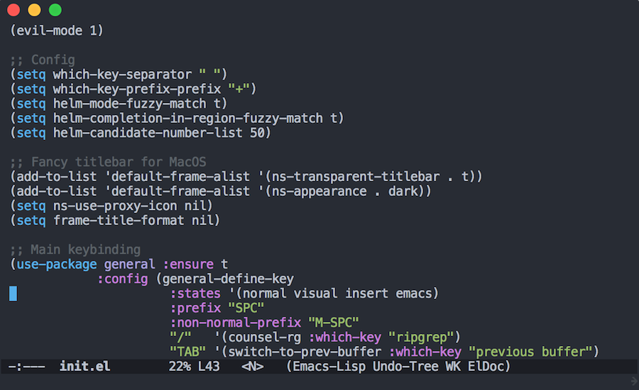

Emacs from scratch
Table of Contents
- 1. Configuration file
- 2. Minimal UI
- 3. Font and Frame Size
- 4. Package Manager
- 5. Vim key binding with Evil Mode
- 6. Installing Theme
- 7. Installing Helm
- 8. Installing Which Key
- 9. Custom Key Binding
- 10. Matching Titlebar color on MacOS
- 11. Project Management
- 12. Optional: NeoTree and Icons
- 13. Optional: Matching Parentheses
- 14. Optional: Disable backup files
- 15. Optional: Problem with environment variables
Spacemacs is the first Emacs version I used, so I'm kind of attached to the evil-mode and SPC mnemonic key binding.
But I always have a feeling that something is not right, Spacemacs hides a lot of things under the hood, and it loads a lot of stuff that I do not need during the startup. This would be a huge waste, and I need to have a fresh setup that I can control every single thing in my editor.
So I created my own Emacs configuration, it's surprisingly easier than as I thought.

In this post, I'll go through the steps I built a minimal Spacemacs-like version, with some basic key binding:
General: SPC / : ripgrep SPC TAB : previous buffer SPC SPC : Open M-x Files: SPC p f : find files Buffers: SPC b b : buffers list Window: SPC w l : move right SPC w h : move left SPC w j : move down SPC w k : move up SPC w / : split right SPC w - : split bottom SPC w x : close window Other: SPC a t : open terminal in current buffer
1 Configuration file
First, we need to create a init.el file:
$ mkdir -p ~/.emacs.d $ touch ~/.emacs.d/init.el
Now, Emacs will start with the ugly tools bar and status bar, just like any editor that I would uninstall right away. Let's change this.
2 Minimal UI
Now, we need to disable all the ugly stuff and make Emacs just as clean and clear as Vim or Sublime, Atom,… or whatever modern editor today has.
Put these to the beginning of your init.el:
;; Minimal UI (scroll-bar-mode -1) (tool-bar-mode -1) (tooltip-mode -1) (menu-bar-mode -1)
3 Font and Frame Size
By default, Emacs will starts with a default monospace font and squared size window. We can change this by adding these settings:
(add-to-list 'default-frame-alist '(font . "mononoki-12")) (add-to-list 'default-frame-alist '(height . 24)) (add-to-list 'default-frame-alist '(width . 80))
In the above config, we set the default font face to mononoki and font size is 12. We also set the frame dimension into 80x24, just like any default terminal emulator size.
Next, we'll add a package manager to start installing themes/packages.
4 Package Manager
By default, Emacs is configured to use ELPA package archive, we'll need to add more repository such as GNU ELPA, MELPA,…
Put this to the beginning of your init.el:
;; Package configs
(require 'package)
(setq package-enable-at-startup nil)
(setq package-archives '(("org" . "http://orgmode.org/elpa/")
("gnu" . "http://elpa.gnu.org/packages/")
("melpa" . "https://melpa.org/packages/")))
(package-initialize)
Next, we'll use use-package to configure our packages better, in case you don't know, this package provides a macro to allow you to easily install packages and isolate package configuration in a way that is both performance-oriented and tidy.
;; Bootstrap `use-package` (unless (package-installed-p 'use-package) (package-refresh-contents) (package-install 'use-package)) (require 'use-package)
5 Vim key binding with Evil Mode
Now that you have package manager setted up, let's install our first package: evil-mode, this package allows you to use Vim-like key binding in Emacs.
;; Vim mode (use-package evil :ensure t :config (evil-mode 1))
I personally prefer using jk for escape key, so I'll install evil-escape and have this setting:
(use-package evil-escape :ensure t :init (setq-default evil-escape-key-sequence "jk") :config (evil-escape-mode 1))
That's it! Now restart your Emacs, you'll see the mode line displaying the current Vim mode, and you'll be able to navigate with hjkl.
6 Installing Theme
One of the best theme for Emacs I could found is doom-themes package, that has a lot of cool themes. The following code will install this package and load its flagship theme doom-one:
;; Theme (use-package doom-themes :ensure t :config (load-theme 'doom-one t))
7 Installing Helm
Helm is a framework for incremental completions and narrowing selections in Emacs. Many people prefer ivy because it's much lighter, for me, it's doesn't matter. I find helm is easier to use and config.
The following snippet will install helm and configure fuzzy matching:
;; Helm (use-package helm :ensure t :init (setq helm-M-x-fuzzy-match t helm-mode-fuzzy-match t helm-buffers-fuzzy-matching t helm-recentf-fuzzy-match t helm-locate-fuzzy-match t helm-semantic-fuzzy-match t helm-imenu-fuzzy-match t helm-completion-in-region-fuzzy-match t helm-candidate-number-list 150 helm-split-window-in-side-p t helm-move-to-line-cycle-in-source t helm-echo-input-in-header-line t helm-autoresize-max-height 0 helm-autoresize-min-height 20) :config (helm-mode 1))
8 Installing Which Key
In Spacemacs, when you press SPC or any other key sequence, a small buffer will be popped up to show the list of features you can do next, installing which-key will give you this.
;; Which Key (use-package which-key :ensure t :init (setq which-key-separator " ") (setq which-key-prefix-prefix "+") :config (which-key-mode 1))
9 Custom Key Binding
Finally, you can start config your custom key binding with general package, this is my config, the prefix is SPC just like in Spacemacs:
;; Custom keybinding (use-package general :ensure t :config (general-define-key :states '(normal visual insert emacs) :prefix "SPC" :non-normal-prefix "M-SPC" ;; "/" '(counsel-rg :which-key "ripgrep") ; You'll need counsel package for this "TAB" '(switch-to-prev-buffer :which-key "previous buffer") "SPC" '(helm-M-x :which-key "M-x") "pf" '(helm-find-files :which-key "find files") ;; Buffers "bb" '(helm-buffers-list :which-key "buffers list") ;; Window "wl" '(windmove-right :which-key "move right") "wh" '(windmove-left :which-key "move left") "wk" '(windmove-up :which-key "move up") "wj" '(windmove-down :which-key "move bottom") "w/" '(split-window-right :which-key "split right") "w-" '(split-window-below :which-key "split bottom") "wx" '(delete-window :which-key "delete window") ;; Others "at" '(ansi-term :which-key "open terminal") ))
10 Matching Titlebar color on MacOS
If you're using Emacs on macOS, you can add this to have your titlebar color changed and matching your color theme:
;; Fancy titlebar for MacOS (add-to-list 'default-frame-alist '(ns-transparent-titlebar . t)) (add-to-list 'default-frame-alist '(ns-appearance . dark)) (setq ns-use-proxy-icon nil) (setq frame-title-format nil)
11 Project Management
One of the most important thing to install at first is projectile, for manage projects in Emacs. In my configuration, I also unset the projectile-require-project-root option to have projectile recognize any folder as a project, not just ones with project files.
;; Projectile (use-package projectile :ensure t :init (setq projectile-require-project-root nil) :config (projectile-mode 1))
12 Optional: NeoTree and Icons
One thing that nice to have is neotree, which will display the folder tree. In this configuration, I also installed all-the-icons so neotree can be displayed with some nice graphical icons:
;; All The Icons (use-package all-the-icons :ensure t) ;; NeoTree (use-package neotree :ensure t :init (setq neo-theme (if (display-graphic-p) 'icons 'arrow)))
Just don't forget to run M-x all-the-icons-install-fonts after start your Emacs for the first time.
13 Optional: Matching Parentheses
This is a very helpful built-in feature of Emacs, by enable this, it will highlight any matching parentheses that the cursor is on.
;; Show matching parens (setq show-paren-delay 0) (show-paren-mode 1)
14 Optional: Disable backup files
I find it really annoying when Emacs automatically create a backup file for every buffer you opened, so I disabled it, you might not want to do this:
;; Disable backup files (setq make-backup-files nil) ; stop creating backup~ files (setq auto-save-default nil) ; stop creating #autosave# files
15 Optional: Problem with environment variables
If you got problem with environment variables or commands, for example, Emacs could not recognize `brew` or something, you might need to load your .bashrc or .bash_profile manually:
(let ((path (shell-command-to-string ". ~/.bashrc; echo -n $PATH")))
(setenv "PATH" path)
(setq exec-path
(append
(split-string-and-unquote path ":")
exec-path)))
From here, you can continue customizing Emacs as you need, for example, add more language supports, customize your mode line,…
I hope you'll find this post helpful and will be able to build your own Emacs configuration. Also, you can check my customized configuration here.